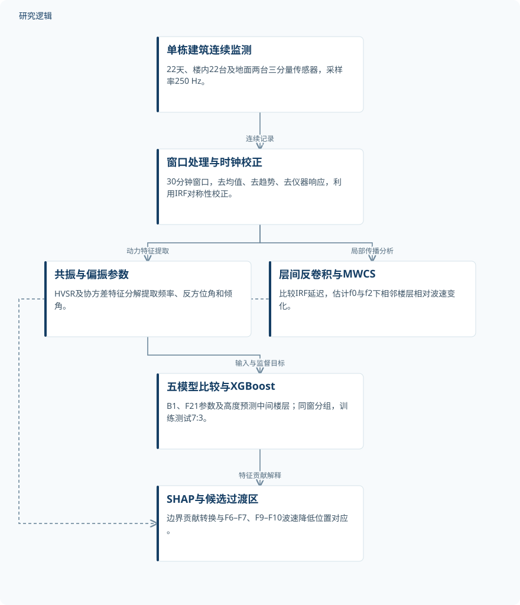
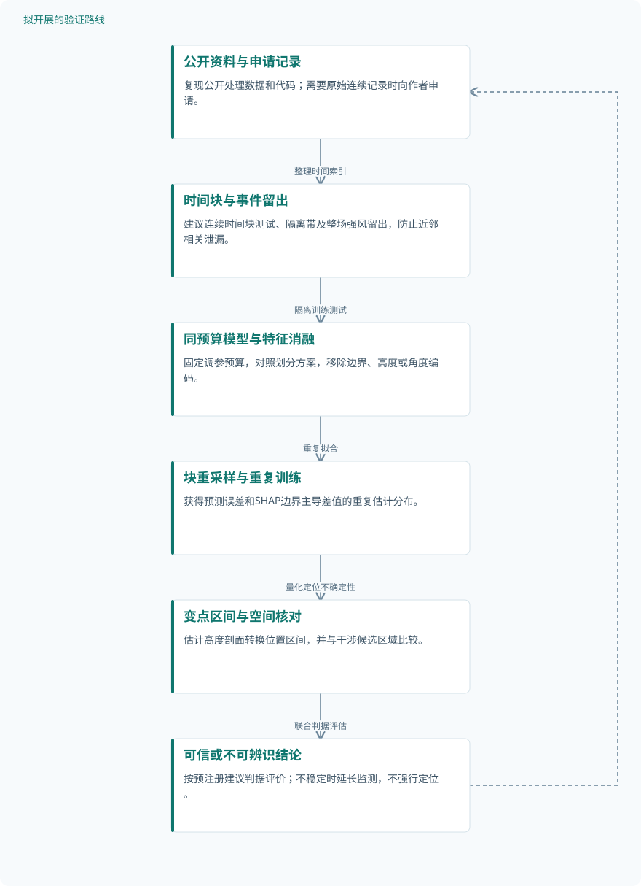

论文精读
利用地震环境噪声与机器学习监测厚沉积层上高层建筑的结构健康
Machine learning–driven structural health monitoring of a high-rise building on thick sediments via seismic ambient noise
精读更新 2026-10-03 17:03 · 依据论文全文整理
厚沉积层上的高层建筑，既受场地放大影响，也承受风致振动：动力参数发生变化，究竟来自哪里？Qin等以一栋21层建筑的连续环境噪声为基础，将层间地震干涉与可解释机器学习结合，探索用地下室和屋顶观测推断中间楼层状态。论文的阅读价值不只是预测误差，更在于理解稀疏监测如何保留空间信息，以及为何动力过渡区仍不能直接等同于损伤。
文章目录
从整栋频率变化走向楼层级动力辨识
环境噪声包含自然与人为激励，无需等待地震便能持续观察建筑动力特性。但共振频率反映传感器所在楼层及其下方结构的累积响应，频率下降不能直接定位变化来源；层间干涉更具局部性，却增加参考比较与计算负担。
研究对象是上海同济大学中和楼，位于约290 m厚冲积沉积层上，总高102 m，包含地下B1和地上21层。地上部分由七个三层L形模块螺旋堆叠，相邻模块旋转90°；这种构造使动力过渡既可能关联荷载传递，也可能体现设计固有差异，而不必意味着结构弱点。
以两端动力边界预测楼内响应
三分量记录按30分钟窗口处理，经去均值、去趋势和仪器响应校正后，通过FFT及带宽系数40的Konno–Ohmachi平滑计算HVSR。共振频率描述振动尺度，协方差矩阵特征分解得到的反方位角与倾角补充方向和水平、垂直运动贡献；室内时钟漂移则利用IRF正负分支对称性校正。
统一全局模型输入B1与F21的f0、反方位角φ、倾角θ，以及目标楼层归一化高度，输出中间楼层三项参数。φ以(cos2φ, sin2φ)编码以处理轴向角度不连续；选择f0是因为其信噪比和可检测性较好，并非证明它保留了高阶模态f2的全部刚度敏感信息。
XGBoost学习非线性跨楼层关系，SHAP解释底层与屋顶输入贡献；这是具有物理解释的数据驱动建模，原文未报告显式物理约束损失。层间反卷积干涉另以平均IRF作为参考，采用MWCS估计延迟并依据dv/v=−dt/t反演相对波速变化，承担空间核对作用。
原研究：环境噪声预测与空间证据核对


机器学习与层间干涉共享单栋建筑观测，形成互补证据；空间对应不等于独立损伤真值验证。
下载 SVG图示关系说明
实线表示相邻阶段的信息流，虚线表示跨阶段联系或反馈。
单栋建筑连续监测 → 窗口处理与时钟校正：连续记录；窗口处理与时钟校正 → 共振与偏振参数：动力特征提取；窗口处理与时钟校正 → 层间反卷积与MWCS：局部传播分析；共振与偏振参数 → 五模型比较与XGBoost：输入与监督目标；五模型比较与XGBoost → SHAP与候选过渡区：特征贡献解释；层间反卷积与MWCS → SHAP与候选过渡区：位置一致性核对
单楼实测、同窗分组与五模型对照
验证来自一栋实物建筑的22天监测：楼内22台SMARTSOLO IGU-16HR地震仪，地面另设两台，采样率250 Hz。每台站总体统计使用1005个不重叠的30分钟窗口；这些窗口并不自动构成统计独立样本，机器学习总样本数及仿真、增强数量未报告。
期间出现蒲福风级8级、9级两次强风，9级事件持续监测第9—11天；主要事件比较取风前、风后各四天，各含192个窗口。建模按7:3划分训练与测试，同一时间窗的所有目标楼层进入同一子集，训练内五折分组交叉验证和网格搜索，标准化参数由训练数据估计。
算法对照包括Ridge、GBDT、SVR、XGBoost和MLP，指标为MAE、RMSE、nMAE及R²。已采用同窗分组防止同期楼层样本分散，但未报告时间外推或整场强风留出测试；边界输入、高度和角度编码消融亦未报告，因此不能量化各项设计的独立贡献。
| 验证任务 | 样本与规模 | 主要结果 |
|---|---|---|
| 现场HVSR与偏振参数的高度及强风响应分析 | 一栋建筑，楼内22台、地面两台传感器，监测22天；每台站1005个不重叠30分钟窗口，统计独立样本数未报告。 | 场地基频约0.38 Hz，放大频带0.2–2 Hz；风后F9以上f0及F10–F13的f2恢复不完全，f2方向在两处过渡区变化。 |
| 反卷积干涉与MWCS层间波速变化分析 | 9级强风前后各四天、各192个不重叠30分钟窗口；有效IRF数及统计独立波速估计数未报告。 | 最大平均波速降幅均约2%：f0下位于F6–F7，f2下位于F9–F10，为候选过渡区提供局部空间约束。 |
| 五种回归模型比较及SHAP空间一致性分析 | 每个样本对应一个时间窗内某目标楼层；建模总样本和各集合数量未报告，不能以1005个窗口替代样本总数。 | XGBoost三个目标nMAE为2.23%、3.22%、0.86%；低层受B1主导、高层F21影响增强，转换位置对应两处候选过渡区。 |
展开数据来源、分组、对照与验证边界
现场HVSR与偏振参数的高度及强风响应分析
数据来源。中和楼及周边地面三分量SAN，250 Hz采样；处理数据公开于Zenodo，原始连续记录需合理申请。
分组与工况。比较场地、不同楼层及f0、f1、f2；监测含8级和9级强风，9级事件前后各四天、各192个窗口。
数据划分。属于现场动力参数与事件前后比较，不涉及模型训练测试划分；窗口时间独立性检验未报告。
对照与消融。以G1、B1场地特征和强风前四天为参照；不同模态与高度相互比较，独立损伤检测对照未报告。
评价指标。共振频率单位Hz，反方位角与倾角单位°；统计均值和±1个标准差，观察事件后的频率恢复。
验证边界。HVSR存在累积响应，不能单独定位变化来源；缺少长期恢复、独立损伤真值与混杂因素控制效果。
反卷积干涉与MWCS层间波速变化分析
数据来源。同一建筑相邻楼层SAN，通过反卷积提取IRF并采用MWCS估计延迟；并非新增独立建筑验证。
分组与工况。按相邻楼层对和f0、f2频带分析，比较强风事件前后，重点关注F6–F7及F9–F10。
数据划分。本项为观测比较而非机器学习实验；风前、风后分组不能视作训练集与测试集。
对照与消融。方法以所有IRF平均结果为参考，事件统计比较风前后四天；其他干涉算法对照和消融未报告。
评价指标。相对波速变化dv/v，以百分比呈现，依据dv/v=−dt/t估计；报告均值及±1个标准差。
验证边界。反演依赖空间均匀波速变化假设，其适用性验证未报告；缺少估计误差验证，不能将降速直接确认为损伤。
五种回归模型比较及SHAP空间一致性分析
数据来源。输入B1、F21的f0及偏振参数与目标高度，输出中间楼层参数；处理数据和建模代码公开，训练模型需申请。
分组与工况。统一跨楼层模型分别评价频率、反方位角与倾角；SHAP比较地下室和屋顶贡献随高度的变化。
数据划分。训练测试7:3，同窗楼层样本归入同一子集；训练内五折分组交叉验证与网格搜索，具体时间顺序未报告。
对照与消融。比较Ridge、GBDT、SVR、XGBoost、MLP；归因位置与干涉结果核对，特征消融及逐层模型定量对照未报告。
评价指标。采用MAE、RMSE、nMAE和R²；SHAP分析重要性比值及屋顶减地面主导差值，归一化细节未报告。
验证边界。缺少时间外推、跨建筑验证及SHAP稳定性区间；预测精度与空间吻合均不能直接转化为损伤识别性能。
空间吻合可信，损伤推断仍需跨越证据鸿沟
XGBoost在所比较模型中表现最佳，频率、反方位角、倾角的nMAE依次为2.23%、3.22%、0.86%，R²为0.9534、0.8716、0.9955。这是动力参数预测表现，不是损伤识别准确率；nMAE归一化公式未提供，邻近时间窗相关性对测试结果的影响也未量化。
风前后比较显示，f0下F6–F7和f2下F9–F10的最大平均波速降幅均约2%，SHAP主导输入转换位置与之吻合。多指标对应支持候选动力过渡区的解释，却不是因果验证；模块刚度差异、荷载传递与可逆刚度变化均可能参与，2%也不是普适损伤阈值。
本文仍缺少跨建筑、已知损伤状态、归因置信区间和实时耗时验证。相关《Data-Driven Monitoring and Predictive Maintenance for Engineering Structures》综述的已检索摘要强调真实环境性能与实时计算挑战，恰好提示下一步应优先检验部署可靠性，而非仅追求更低拟合误差。
从这篇论文走向下一项研究
以下为结合研究方向提出的候选方案，实验设计与预期目标有待验证。
时间隔离与归因稳定性联合验证
问题与短板。现有同窗分组避免同期楼层信息交叉，但相邻窗口仍可能相关，SHAP转变位置也缺少稳定性区间。建议先回答预测与定位能否跨时间保持，而非直接扩展模型复杂度。
改进机制。将连续时间块作为划分及重采样单位，在训练与测试之间设置隔离带。通过重复重训练得到边界贡献差值的分布，再对高度剖面做变点分析，区分持续过渡与偶然归因波动。
候选创新。候选创新是把时间外推误差、归因变点置信区间和干涉位置一致性组成联合可信度评估。分组验证与bootstrap均为已有技术，拟议的新组合不应表述为本文已完成成果。
数据与实验设计。先用公开处理数据与代码复现；建议设计为五折连续时间块测试，并将整场9级强风留出作为专项测试。原始记录需申请；隔离长度按训练段自相关确定，窗口数不充当独立建筑数。
对照与消融。对照原7:3同窗分组、连续时间块和事件留出方案，保持调参预算一致。消融B1、F21、高度及双角编码，并改变SHAP背景集，分别检验预测性能和定位稳定性。
成功判据。建议预注册：隔离测试各目标nMAE相对同窗方案增幅不超过20%，且至少80%的块重采样定位落在候选区域上下一个楼层内。此为建议判据，不是现有结果或安全阈值。
风险与替代方案。22天记录可能不足以稳定估计季节漂移，严格留出也可能导致样本短缺。若定位区间过宽，应报告不可辨识而非强行给出楼层结论，再通过新增连续监测延长时间覆盖。
分离模块固有过渡与损伤诱发异常
问题与短板。波速下降与SHAP转换吻合仍无法区分模块设计、环境可逆变化和真实损伤。建议把健康状态证据引入验证，避免将中和楼约2%的变化直接作为其他建筑报警标准。
改进机制。先建立考虑风、温湿度与活动变化的条件基线，再联合频率、角度和波速残差识别异常。采用有限元参数扰动检验不同刚度分布能否产生相似过渡，显式揭示解释的非唯一性。
候选创新。候选创新是联合环境条件残差、设计模块信息与局部波速证据，输出可逆变化、设计过渡和待复核异常三类结论。多源融合与模型更新已有基础，新组合仍需实测证明有效。
数据与实验设计。建议设计至少三栋不同结构建筑，每栋连续监测不少于三个月，采集环境及可核验巡检记录；损伤案例仅在合法可获得时纳入。公开处理数据用于起步，新增数据需合作采集，仿真单独统计。
对照与消融。比较原XGBoost加SHAP、环境校正模型及联合证据方案；消融环境变量、模块边界、f2和波速证据。按建筑留一测试，避免同栋数据混入两侧，仿真损伤不得替代实物真值。
成功判据。建议以健康期固定误报预算下的异常检出、定位误差和恢复判别作为成功标准，并报告跨建筑置信区间。仅有可信状态标签时计算损伤检出率，无法核验的异常保留为待复核。
风险与替代方案。真实损伤稀缺且不宜人为施加，低层f2也可能难以观测。替代路径是健康建筑环境扰动验证结合公开试验结构数据；若只有仿真证据，应限定为机制敏感性研究而非工程诊断。
后续建议：时间外推与归因稳定性检验


对应第一条研究路线，所有划分、重采样和成功判据均为拟议验证，不表示已获得改善。
下载 SVG图示关系说明
实线表示相邻阶段的信息流，虚线表示跨阶段联系或反馈。
公开资料与申请记录 → 时间块与事件留出：整理时间索引；时间块与事件留出 → 同预算模型与特征消融：隔离训练测试；同预算模型与特征消融 → 块重采样与重复训练：重复拟合；块重采样与重复训练 → 变点区间与空间核对：量化定位不确定性；变点区间与空间核对 → 可信或不可辨识结论：联合判据评估；可信或不可辨识结论 → 公开资料与申请记录：不足时新增观测